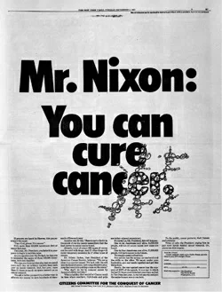

1. A newspaper advertisement addresses the president
In December 1969, a striking advertisement appeared in The Washington Post, followed by a version in The New York Times. It called directly on President Richard Nixon to act against cancer.
The advertisement used the recent Moon landing as its central argument. It suggested that a nation capable of accomplishing Apollo could also organize the people, money, and planning required to attack cancer. It presented the number of Americans dying of cancer and asked the president to make research a national priority.
The accompanying visual showed cancer cells spreading into the text itself. The message was designed to be difficult to ignore: cancer was no longer a private shame but a public emergency demanding federal action.
This was a sharp departure from the earlier period when even the word cancer had sometimes been avoided in public announcements.
2. Cancer enters popular culture
Mukherjee pauses to examine why cancer had become such a prominent subject in films, novels, newspapers, and public debate. Works such as Cancer Ward, Love Story, and other popular stories helped bring the experience of cancer into ordinary conversation.
In the 1950s, Cold War fears often imagined danger arriving from outside: bombs, invading armies, and alien creatures. By the early 1970s, a different kind of fear occupied the public imagination—danger arising from within the body or society.
Cancer symbolized this fear with disturbing clarity. The enemy was not outside the body; it was formed from the body's own cells.
These cultural observations are the author's interpretation of a historical mood, not a biological explanation of cancer. But they help explain why the campaign resonated so deeply with the public.
3. Richard Nixon and goal-directed science
Nixon was receptive to programs with visible goals, plans, and accountability. He was less enthusiastic about scientific research that appeared diffuse, indefinite, or dominated by independent academic interests.
The Laskerites recognized an opportunity. Their proposal could be presented not simply as more scientific funding but as a tightly managed national mission. It offered political benefits too: a president who backed a major attack on cancer might be remembered for an important public achievement.
The advocates had become very skillful at translating medical hopes into arguments that political leaders could act upon.

4. Mary Lasker assembles a commission
Lasker proposed a panel of influential figures to advise the government about a major cancer initiative. Scientists, physicians, administrators, and business leaders would investigate how a coordinated program should be structured.
The panel was not as neutral as the proposal might have sounded. Lasker deliberately selected many people already sympathetic to her goal. Sidney Farber became one of its central scientific voices, alongside political and administrative allies including Benno Schmidt.
Their recommendation was ambitious: cancer research should receive substantially greater funding and a structure more independent of routine NIH administration.
In effect, they imagined something like NASA for cancer—a distinct organization with its own mission and authority.
5. What was the proposed National Cancer Authority?
The idea was to create a more autonomous federal cancer agency with high-level leadership, a visible national mandate, and more direct political accountability.
Supporters believed that ordinary scientific administration moved too slowly. They wanted the urgency of a national emergency to produce faster decisions and substantial research funding.
Critics worried that pulling cancer research apart from the wider biomedical system would weaken the very discoveries that made progress possible. Cancer research drew upon genetics, chemistry, virology, immunology, pathology, and other fields; isolating it could disrupt those connections.
This was the same debate introduced in Chapter 15, now occurring in front of lawmakers.
6. The Kennedy–Javits proposal and the campaign of letters
In 1971, senators Edward Kennedy and Jacob Javits advanced legislation intended to establish a powerful, comparatively independent cancer authority.
Mary Lasker helped organize support. One of her most effective tactics was persuading advice columnist Ann Landers to encourage readers to write to their senators in favor of the cancer initiative.
The response was extraordinary. According to Mukherjee, roughly one million letters reached the Senate. Offices were overwhelmed, and some senators received tens of thousands of messages.
The campaign demonstrated the political power of public fear and hope. Cancer research was no longer a subject mainly discussed by doctors, administrators, and specialist committees. It had become something voters demanded from elected officials.
7. The Senate votes—but the House hesitates
The Senate approved the proposed legislation by an overwhelming margin: 79 votes to 1 on July 7, 1971.
But the House of Representatives was less willing to accept the Laskerites' preferred structure. It sought testimony from additional scientists and administrators, including those who were skeptical of the “moon shot” analogy.
The differences were not merely bureaucratic. They concerned a basic question: Did scientists know enough about cancer to justify a massive mission organized around rapid cures?
8. The central scientific objection to a “moon shot”
Many researchers argued that Apollo had applied extensive existing knowledge about physics, engineering, and flight. Cancer was not in the same position. Scientists still lacked a clear understanding of the processes that caused cells to become malignant.
Researcher Sol Spiegelman used a memorable comparison: a crash program to cure cancer without sufficient biology would be like attempting a Moon landing without the laws of gravity.
James Watson and other scientists also warned that funding research simply because it promised immediate relevance might encourage weak or mediocre projects while neglecting more fundamental questions.
Their concern was not that cancer research deserved no money. They feared that politically directed promises could force researchers to pursue premature or unsuitable strategies.

9. Why both sides had a point
The Laskerites could cite real achievements: chemotherapy had transformed outcomes for some childhood leukemias and Hodgkin lymphoma. Those discoveries suggested that organized experimentation and funding could matter enormously.
The critics could cite equally real limits: many cancers were still resistant to treatment, and the underlying biology remained incompletely understood. No amount of enthusiasm could guarantee the discovery of a universal cure.
| Campaigners' argument | Scientists' caution |
|---|---|
| Patients are dying now; increase funding urgently | The disease is not yet understood well enough to set a simple cure deadline |
| Organized national missions have achieved extraordinary goals | Technical missions often depend on decades of prior basic research |
| Chemotherapy has already cured some cancers | Those successes may not transfer to every cancer |
| Public accountability can accelerate progress | Political pressure can encourage hype and unrealistic promises |
The conflict illustrates how difficult it is to design public policy for a problem with both urgent human needs and deep scientific unknowns.
10. A compromise reaches Nixon's desk
A compromise bill developed in the House retained a substantial increase in federal cancer funding while avoiding creation of a fully separate NASA-like agency.
The House approved the legislation by 350 votes to 5. After reconciling the Senate and House versions, the bill was sent to the president.
On December 23, 1971, Nixon signed the National Cancer Act at the White House.
The law marked a turning point in American biomedical policy. The book reports planned funding of about $400 million for 1972, $500 million for 1973, and $600 million for 1974—approximately $1.5 billion across three years.
The National Cancer Institute received greatly expanded resources and attention, but not the complete autonomy Mary Lasker had originally demanded.
11. Victory without complete satisfaction
The law was a historic achievement. Cancer research obtained resources and visibility on a scale few advocates could have imagined two decades earlier.
Yet nearly every group found something to dislike. The Laskerites believed the legislation lacked sufficient independence and force. Some researchers feared excessive direction and unrealistic expectations. NIH administrators worried about one disease being politically favored over other urgent medical needs.
A recurring distinction from earlier chapters reappears: a policy success is not the same thing as a medical cure. Money can expand scientific capacity, but it cannot determine in advance when the needed discoveries will occur.
12. Farber and Lasker step away from the center
Farber did not attend Nixon's signing ceremony. After years of public campaigning and a painful legislative compromise, he returned much of his attention to Boston. Lasker also became less central to the cancer campaign, although she continued supporting medical science and other public causes.
She had transformed the landscape of medical advocacy, yet she remained dissatisfied by how much still needed to be done.
The chapter avoids a neat heroic ending. Even when a movement wins a landmark law, its leaders may feel disappointed because their ambitions exceeded what policy could deliver.
13. Sidney Farber's death (March 30, 1973)
On March 30, 1973, a medical emergency call sounded at the Jimmy Fund clinic. Staff hurried to Farber's office. He had collapsed at his desk and died of cardiac arrest.
The scene has profound symbolic force. Farber had spent years trying to move cancer medicine from autopsy rooms toward treatments that could preserve life. His own final hours were spent at work, discussing the future of the clinic and the struggle against cancer.
The scientist who had waited for a packet of antifolates in a basement laboratory had helped create an entire research and political movement. Yet the disease had not been defeated, and Farber did not live to see much of the later biological revolution.
14. The chapter returns to Carla Reed
The closing scene moves to August 2005, when Mukherjee phones Carla Reed. Her bone-marrow results have returned. Normal blood-forming cells are recovering, and no leukemia is visible in the sampled marrow.
He tells her that she is in full remission.
This is a moment of genuine hope, though not yet proof of permanent cure. It also completes a historical circle. The long chain of experiments, failed drugs, difficult trials, and treatment advances beginning with Farber had helped make Carla's remission possible.
The author returns from national politics to a single patient because, ultimately, the meaning of the entire story is found in individual lives.
15. Historical timeline and essential concepts
| Date | Development |
|---|---|
| December 1969 | Major public advertisement urges Nixon to support a cancer mission |
| 1970–1971 | Panel and congressional proposals debate a national cancer authority |
| April 1971 | Ann Landers column stimulates a flood of letters |
| July 7, 1971 | Senate votes 79–1 for the cancer legislation |
| December 23, 1971 | Nixon signs the National Cancer Act |
| March 30, 1973 | Sidney Farber dies in his office |
| August 2005 | Mukherjee tells Carla Reed she has reached full remission |
National Cancer Act: United States law that substantially expanded federal cancer research support and the NCI's role.
Basic research: Investigation aimed at understanding fundamental principles, without requiring an immediately usable treatment.
Programmatic research: Organized investigation directed toward defined practical objectives.
Remission: The cancer's detectable evidence has decreased or disappeared according to the tests used; it is not necessarily identical with cure.
16. The deeper meaning: National ambition meets biological reality
The passage of the National Cancer Act shows what public organization and political persuasion can accomplish. The campaign successfully made cancer a national priority and supplied research with resources that would support future discoveries.
But Mukherjee also shows the danger of promising too much. The language of war encourages certainty, deadlines, and victories. Cancer science moves through uncertainty, variation, unexpected failures, and incremental knowledge.
The ending with Carla reminds the reader that the goal was never only to create a powerful agency. The real goal was to make survival possible for actual people while understanding more deeply what causes the disease.
Chapter takeaway: The national War on Cancer gains unprecedented federal support in 1971, but political victory cannot guarantee scientific victory. Farber's death closes one era, and Carla's remission reminds us why the struggle continues.